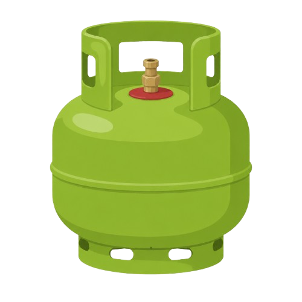
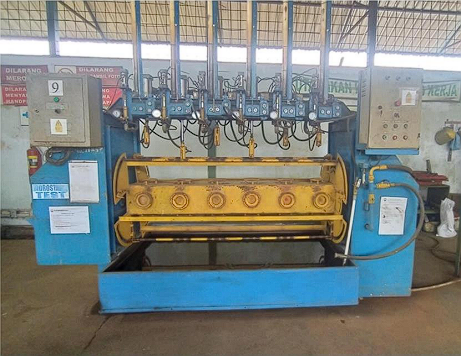
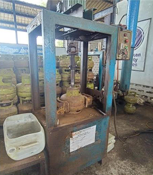
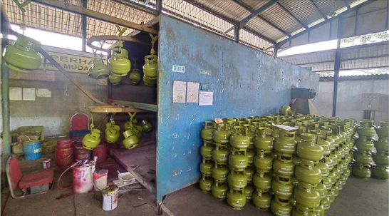
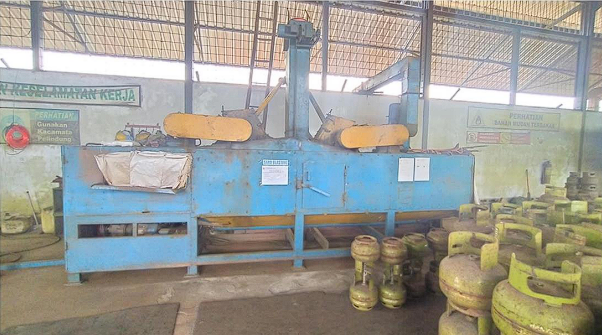
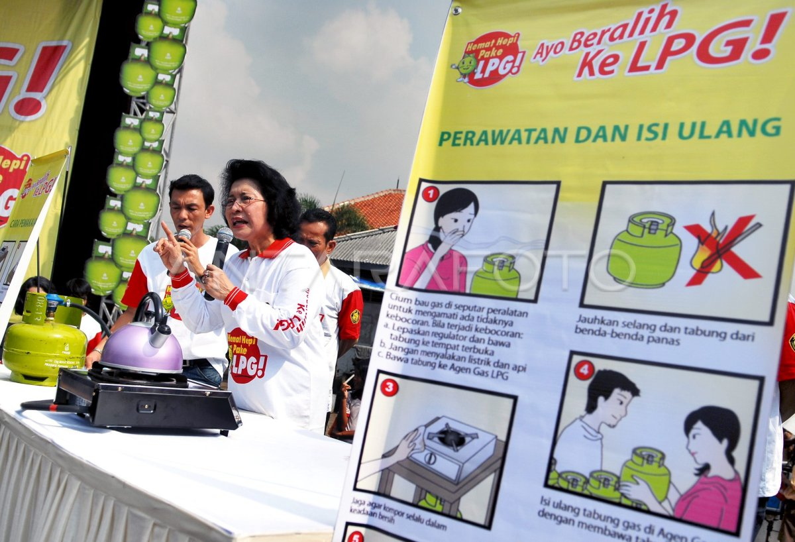
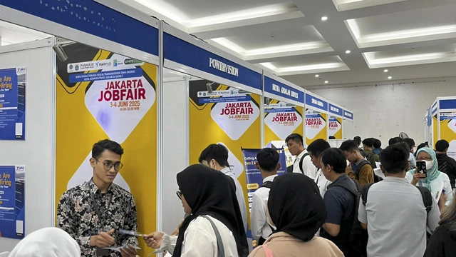
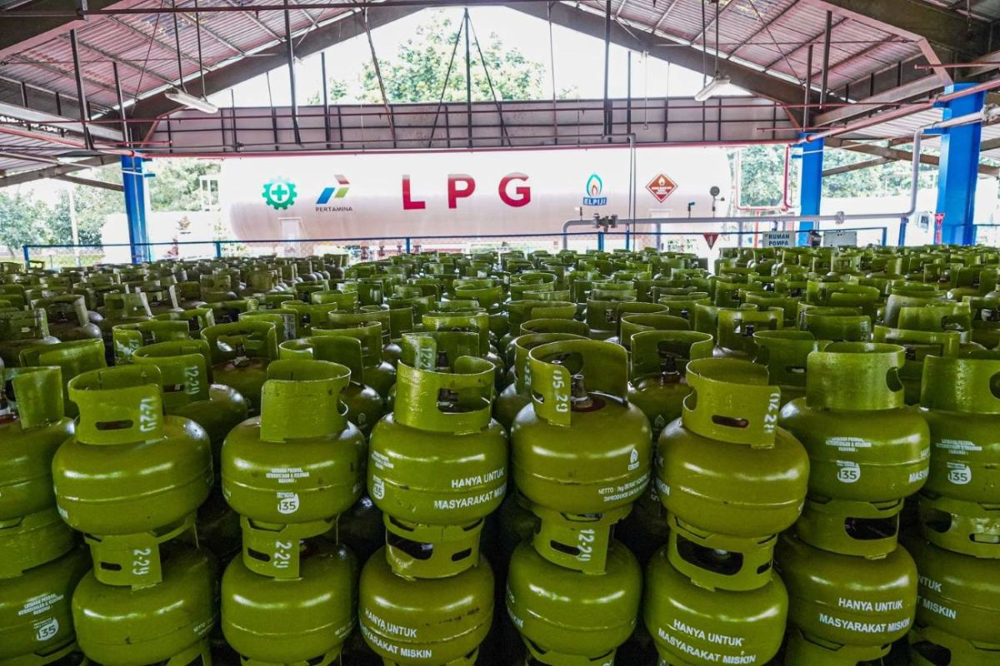

Komitmen Kami: Tabung Gas Aman, Layak Pakai, dan Sesuai Standar
Setiap tabung yang kami perbaiki melalui pemeriksaan visual, uji kebocoran, dan uji tekanan sebelum dikirim kembali ke pelanggan.
Menjaga tabung gas LPG tetap aman bagi setiap rumah tangga, dari Kebumen, Jawa Tengah.

Perusahaan jasa perawatan tabung gas LPG di Kutowinangun, Kebumen, yang bekerja sebagai rekan PT Pertamina (Persero).
Pemeriksaan dan pengujian tekanan agar tabung layak pakai.
Perbaikan valve, hand guard, dan footring yang rusak.
Pengecatan ulang dan pemberian marka sesuai ketentuan.
Mutu, keselamatan kerja, dan lingkungan menjadi bagian dari setiap proses.



Berdiri pada Juni 2012 dan berlokasi di Kutowinangun, Kebumen. Sebagai rekan kerja PT Pertamina (Persero), kami melakukan retest, repair, dan repaint sebelum tabung kembali beredar ke masyarakat.
Visi: Menjadi perusahaan jasa perbengkelan terkemuka dan mitra terpercaya di sekitar hilir industri LPG dalam kurun waktu tertentu.
Misi:
Lebih dari satu dekade, PT Medari Karya Mulia dipercaya sebagai mitra PT Pertamina (Persero) dalam retest, repair, dan repaint tabung LPG. Seluruh layanan kami jalankan dengan sistem manajemen mutu dan lingkungan.
Tahun beroperasi
Luas lahan
Bidang usaha
Tahap alur kerja
Perjalanan PT Medari Karya Mulia
PT Medari Karya Mulia didirikan di Jl. Raya Kutowinangun Km 05, Kebumen, sebagai perusahaan jasa reparasi tabung gas LPG di atas lahan seluas 869 m².
Menjadi rekan kerja PT Pertamina (Persero) dengan tiga bidang usaha: retest, repair, dan repaint.
Menerapkan sistem manajemen mutu (ISO 9000) dan sistem manajemen lingkungan (ISO 14001).
Meraih penghargaan Usaha Besar Terbaik III dari Bupati Kebumen dalam Kebumen Business Forum 2019.
Terus menjaga mutu, keselamatan kerja, dan kelestarian lingkungan bersama mitra.
Tiga layanan yang menjaga tabung LPG tetap layak pakai
Layanan Kami
Setiap tabung diperiksa, diperbaiki, dan dicat ulang sesuai ketentuan mitra sebelum kembali ke masyarakat.

Pemeriksaan dan pengujian tekanan untuk memastikan setiap tabung masih layak digunakan sebelum kembali ke masyarakat.
Perbaikan bagian tabung yang rusak, seperti valve, hand guard, dan footring, sesuai ketentuan mitra.
Pembersihan permukaan, pengecatan ulang, dan pemberian marka sesuai ketentuan PT Pertamina (Persero).
Dari penerimaan tabung sampai pemeriksaan akhir
Tabung diterima dan diperiksa kondisi awalnya sebelum masuk ke lini produksi.
Sisa gas dikeluarkan dengan aman sebelum tabung diperbaiki dan diuji.
Bagian yang rusak, seperti valve, hand guard, dan footring, diperbaiki.
Pengujian tekanan memastikan tabung layak digunakan kembali.
Permukaan dibersihkan, dicat ulang, dan diberi marka sesuai ketentuan.
Setiap tabung diperiksa sekali lagi sebelum dikembalikan ke mitra.
Kami menjalankan usaha dengan memperhatikan mutu, keselamatan, dan lingkungan.
Setiap tabung diperiksa sebelum dikembalikan.
Alat pelindung diri wajib dipakai di lantai produksi.
Limbah dikelola dan diserahkan kepada pihak ketiga berizin.
Jajaran manajemen PT Medari Karya Mulia
Orang-orang yang memimpin operasional, keuangan, dan produksi di PT Medari Karya Mulia.
Pusat dan lokasi produksi:
Jl. Raya Kutowinangun Km 05, Kecamatan Kutowinangun, Kabupaten Kebumen, Jawa Tengah.
Setiap tabung yang kami perbaiki melalui pemeriksaan visual, uji kebocoran, dan uji tekanan sebelum dikirim kembali ke pelanggan.

Seluruh karyawan produksi mengikuti pelatihan K3 dan simulasi tanggap darurat untuk memperkuat budaya kerja yang aman.

Kami berbagi pengetahuan tentang penggunaan tabung gas LPG yang aman kepada warga di sekitar lokasi usaha.

Kami membuka kesempatan bergabung untuk posisi Operator Produksi, Staf Quality Control, dan Teknisi Mesin.
Bergabung bersama tim yang menjaga tabung LPG tetap aman
Deskripsi: Menjalankan dan mengawasi mesin pada lini produksi tabung gas agar target produksi harian tercapai dengan mutu terjaga.
Tanggung jawab:
Kualifikasi:
Deskripsi: Memeriksa dan memastikan mutu tabung gas sesuai standar sebelum dikirim ke pelanggan.
Tanggung jawab:
Kualifikasi:
Deskripsi: Merawat dan memperbaiki mesin produksi agar selalu siap pakai dan downtime tetap rendah.
Tanggung jawab:
Kualifikasi:
Hubungi PT Medari Karya Mulia, kami siap membantu.

Kunjungi kami atau kirim pesan